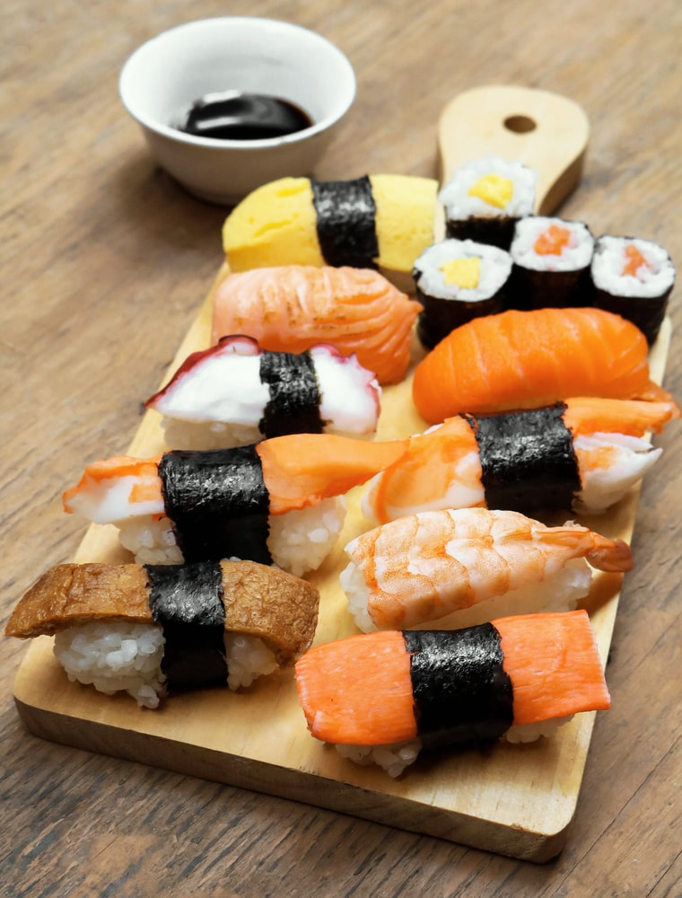

Sushi

What is Sushi?
Sushi is a traditional Japanese dish of prepared vinegared rice, usually with some sugar and salt, accompanied by a variety of ingredients, such as seafood, often raw, and vegetables. Styles of sushi and its presentation vary widely, but the one key ingredient is "sushi rice", also referred to as shari, or sumeshi.
What is the most famous Sushi dish in USA?
Chūtoro
Chūtoro is usually found near the skin on the back and belly. It combines the lighter but deep, slightly bitter flavor of an akami with the sweet tenderness of an ōtoro. It is quite expensive and usually served only on special occasions.
What are the Ingredients you need to make chutoro?
- medium fatty tuna
- sushi rice
- rice vinegar
- wasabi paste
What are the steps to put together chutoro?
- Begin by washing and soaking the sushi rice. Place the rice in a dish and rinse thoroughly with cold water, carefully washing and draining the rice several times until the water begins to run clear. Cover the rice again with water, then leave to soak for 20 minutes.
- Once the rice has soaked, carefully drain away the soaking water and place the rice in a pan with a tightly fitting lid. Pour over 180ml of water and place over a high heat, allowing the water to come up to to the boil.
- Reduce the heat to very low and cover the pan with its lid, leaving the rice to cook for 20 minutes.
SKIPPING SOME STEPS BECAUSE I AM LAZY
- Using a blowtorch, sear the nigiri evenly until lightly golden and just beginning to char. Arrange across a serving platter (or individual plates if preferred) and top each piece of nigiri with 2g of caviar, serving immediately with wasabi paste and sushi vinegar on the side.
- 20g of caviar
- sushi ginger
- wasabi paste
Back To Top
Back To Main Menu